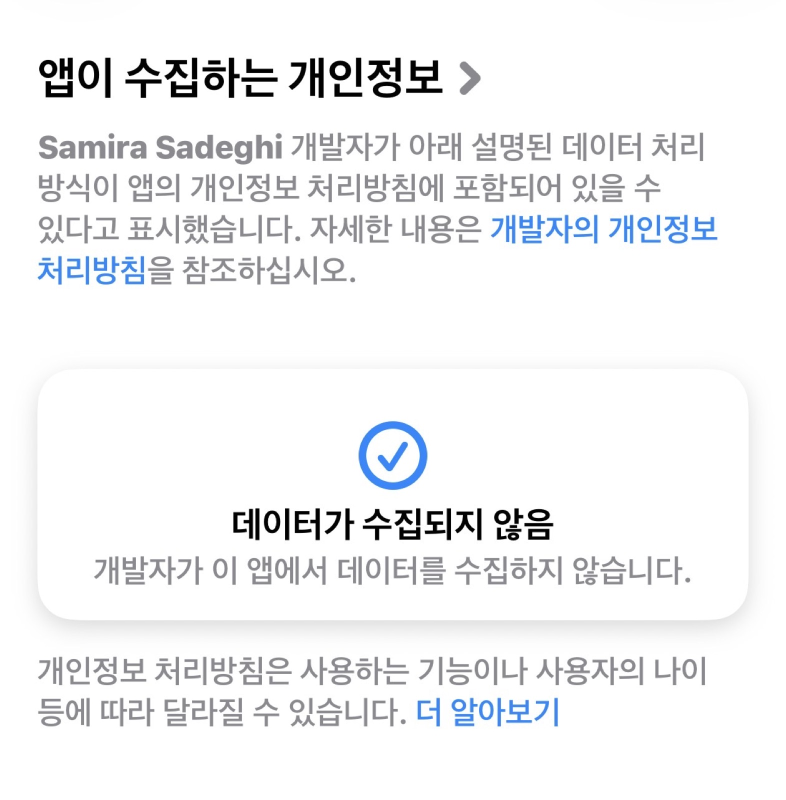
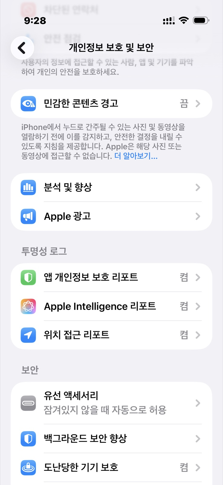
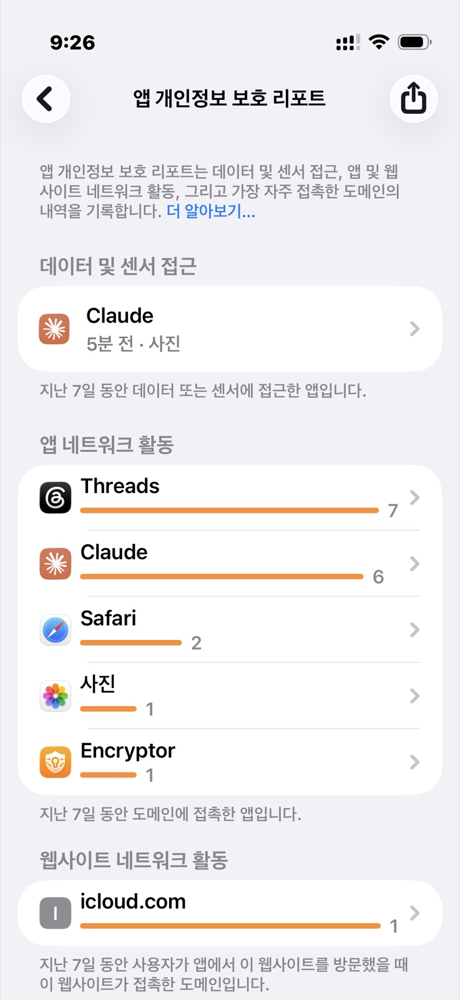

애플 제품을 쓰는 이유는 디자인 감성 때문일 수도 있고, 어떤 사람들에겐 거의 종교적인 이유일 수도 있다. 하지만 폐쇄적인 생태계를 유지하는 애플이기에, 보안적인 측면 때문에 쓰는 유저도 적지 않을 거다.
그런데 앱스토어를 통과했다고 무조건 믿을 수 있을까? 놉. 아니다.

물론 앱을 직접 뜯어서 코드까지 확인할 수는 없다. 하지만 어느 정도 확인할 수 있는 절차는 있다. 바로 아이폰의 '앱 개인정보 보호 리포트'다. 설정 → 개인정보 보호 및 보안으로 들어가서 아래로 내려보면 찾을 수 있다.

개인정보 보호 및 보안 > 앱 개인정보 보호 리포트" />이걸 켜두면 사용한 데이터 및 센서 접근, 앱과 웹사이트의 네트워크 활동, 그리고 가장 자주 접촉한 도메인 내역이 기록된다.

다른 앱들이야 크게 상관없지만, 파일이나 문서, 사진 등을 저장·관리하는 앱들은 한 번쯤 이걸 확인해서 몰래 내 자료를 빼가는 건 아닌지 점검하는 습관을 들이자.
참고로 스크린샷에 나온 'api.revenuecat.com'은 유료 구독자 관리에 쓰는 사이트라, 정보를 빼가는 것과는 무관하다.
그나저나 쓰레드 쟤는 왜 켜지도 않았는데 저러는 거지. 앱 삭제해야겠다. 기분이 드럽다앗.